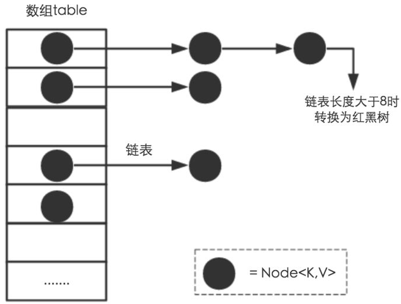
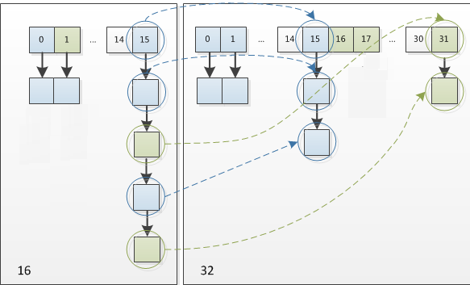

HashMap集合(高级)
1.HashMap集合简介
HashMap基于哈希表的Map接口实现，是以key-value存储形式存在，即主要用来存放键值对。HashMap 的实现不是同步的，这意味着它不是线程安全的。它的key、value都可以为null。此外，HashMap中的映射不是有序的。
JDK1.8 之前 HashMap 由 数组+链表 组成的，数组是 HashMap 的主体，链表则是主要为了解决哈希冲突(两个对象调用的hashCode方法计算的哈希码值一致导致计算的数组索引值相同)而存在的（“拉链法”解决冲突）.JDK1.8 以后在解决哈希冲突时有了较大的变化，当链表长度大于阈值（或者红黑树的边界值，默认为 8）并且当前数组的长度大于64时，此时此索引位置上的所有数据改为使用红黑树存储。
补充：将链表转换成红黑树前会判断，即使阈值大于8，但是数组长度小于64，此时并不会将链表变为红黑树。而是选择进行数组扩容。
这样做的目的是因为数组比较小，尽量避开红黑树结构，这种情况下变为红黑树结构，反而会降低效率，因为红黑树需要进行左旋，右旋，变色这些操作来保持平衡 。同时数组长度小于64时，搜索时间相对要快些。所以综上所述为了提高性能和减少搜索时间，底层在阈值大于8并且数组长度大于64时，链表才转换为红黑树。具体可以参考 treeifyBin方法。
当然虽然增了红黑树作为底层数据结构，结构变得复杂了，但是阈值大于8并且数组长度大于64时，链表转换为红黑树时，效率也变的更高效。
小结：
特点：
1.存取无序的
2.键和值位置都可以是null，但是键位置只能是一个null
3.键位置是唯一的，底层的数据结构控制键的
4.jdk1.8前数据结构是：链表 + 数组 jdk1.8之后是 ： 链表 + 数组 + 红黑树
5.阈值(边界值) > 8 并且数组长度大于64，才将链表转换为红黑树，变为红黑树的目的是为了高效的查询。
2.HashMap集合底层的数据结构
2.1数据结构概念
数据结构是计算机存储、组织数据的方式。数据结构是指相互之间存在一种或多种特定关系的数据元素的集合。通常情况下，精心选择的数据结构可以带来更高的运行或者存储效率。数据结构往往同高效的检索算法和索引技术有关。
数据结构：就是存储数据的一种方式。ArrayList LinkedList
在JDK1.8 之前 HashMap 由 数组+链表 数据结构组成的。
在JDK1.8 之后 HashMap 由 数组+链表 +红黑树数据结构组成的。
2.2HashMap底层的数据结构存储数据的过程
存储过程如下所示：
使用的代码：
1 | public class Demo01 { |

说明：
1.面试题：HashMap中hash函数是怎么实现的？还有哪些hash函数的实现方式？
1 | 对于key的hashCode做hash操作，无符号右移16位然后做异或运算。 |
2.面试题：当两个对象的hashCode相等时会怎么样？
1 | 会产生哈希碰撞，若key值内容相同则替换旧的value.不然连接到链表后面，链表长度超过阈值8就转换为红黑树存储。 |
3.面试题：何时发生哈希碰撞和什么是哈希碰撞,如何解决哈希碰撞？
1 | 只要两个元素的key计算的哈希码值相同就会发生哈希碰撞。jdk8前使用链表解决哈希碰撞。jdk8之后使用链表+红黑树解决哈希碰撞。 |
4.面试题：如果两个键的hashcode相同，如何存储键值对？
1 | hashcode相同，通过equals比较内容是否相同。 |
5.在不断的添加数据的过程中，会涉及到扩容问题，当超出临界值(且要存放的位置非空)时，扩容。默认的扩容方式：扩容为原来容量的2倍，并将原有的数据复制过来。
6.通过上述描述，当位于一个链表中的元素较多，即hash值相等但是内容不相等的元素较多时，通过key值依次查找的效率较低。而JDK1.8中，哈希表存储采用数组+链表+红黑树实现，当链表长度(阀值)超过 8 时且当前数组的长度 > 64时，将链表转换为红黑树，这样大大减少了查找时间。jdk8在哈希表中引入红黑树的原因只是为了查找效率更高。
简单的来说，哈希表是由数组+链表+红黑树（JDK1.8增加了红黑树部分）实现的。如下图所示。

但是这样的话问题来了，传统hashMap的缺点，1.8为什么引入红黑树？这样结构的话不是更麻烦了吗，为何阈值大于8换成红黑树？
JDK 1.8 以前 HashMap 的实现是 数组+链表，即使哈希函数取得再好，也很难达到元素百分百均匀分布。当 HashMap 中有大量的元素都存放到同一个桶中时，这个桶下有一条长长的链表，这个时候 HashMap 就相当于一个单链表，假如单链表有 n 个元素，遍历的时间复杂度就是 O(n)，完全失去了它的优势。针对这种情况，JDK 1.8 中引入了 红黑树（查找时间复杂度为 O(logn)）来优化这个问题。 当链表长度很小的时候，即使遍历，速度也非常快，但是当链表长度不断变长，肯定会对查询性能有一定的影响，所以才需要转成树。
至于为什么阈值是8，我想，去源码中找寻答案应该是最可靠的途径。 下面我们在分析源码的时候会介绍。
7.总结：
上述我们大概阐述了HashMap底层存储数据的方式。为了方便大家更好的理解，我们结合一个存储流程图来进一步说明一下：(jdk8存储过程)

说明：
1.size表示 HashMap中K-V的实时数量 ， 注意这个不等于数组的长度 。
2.threshold( 临界值) =capacity(容量) * loadFactor( 加载因子 )。这个值是当前已占用数组长度的最大值。size超过这个临界值就重新resize(扩容)，扩容后的 HashMap 容量是之前容量的两倍 。
3.HashMap继承关系
HashMap继承关系如下图所示：

说明：
- Cloneable 空接口，表示可以克隆。 创建并返回HashMap对象的一个副本。
- Serializable 序列化接口。属于标记性接口。HashMap对象可以被序列化和反序列化。
- AbstractMap 父类提供了Map实现接口。以最大限度地减少实现此接口所需的工作。
补充：通过上述继承关系我们发现一个很奇怪的现象， 就是HashMap已经继承了AbstractMap而AbstractMap类实现了Map接口，那为什么HashMap还要在实现Map接口呢？同样在ArrayList中LinkedList中都是这种结构。
1 | 据 java 集合框架的创始人Josh Bloch描述，这样的写法是一个失误。在java集合框架中，类似这样的写法很多，最开始写java集合框架的时候，他认为这样写，在某些地方可能是有价值的，直到他意识到错了。显然的，JDK的维护者，后来不认为这个小小的失误值得去修改，所以就这样存在下来了。 |
4.HashMap集合类的成员
4.1成员变量
1.序列化版本号
1 | private static final long serialVersionUID = 362498820763181265L; |
2.集合的初始化容量( 必须是二的n次幂 )
1 | //默认的初始容量是16 -- 1<<4相当于1*2的4次方---1*16 |
问题： 为什么必须是2的n次幂？如果输入值不是2的幂比如10会怎么样？
HashMap构造方法还可以指定集合的初始化容量大小：
1 | HashMap(int initialCapacity) 构造一个带指定初始容量和默认加载因子 (0.75) 的空 HashMap。 |
根据上述讲解我们已经知道，当向HashMap中添加一个元素的时候，需要根据key的hash值，去确定其在数组中的具体位置。 HashMap为了存取高效，要尽量较少碰撞，就是要尽量把数据分配均匀，每个链表长度大致相同，这个实现就在把数据存到哪个链表中的算法。
这个算法实际就是取模，hash%length，计算机中直接求余效率不如位移运算(这点上述已经讲解)。所以源码中做了优化,使用 hash&(length-1)，而实际上hash%length等于hash&(length-1)的前提是length是2的n次幂。
为什么这样能均匀分布减少碰撞呢？2的n次方实际就是1后面n个0，2的n次方-1 实际就是n个1；
举例：
说明：按位与运算：相同的二进制数位上，都是1的时候，结果为1，否则为零。
1 | 例如长度为8时候，3&(8-1)=3 2&(8-1)=2 ，不同位置上，不碰撞； |
1 | 例如长度为9时候，3&(9-1)=0 2&(9-1)=0 ，都在0上，碰撞了； |
注意： 当然如果不考虑效率直接求余即可（就不需要要求长度必须是2的n次方了）
小结：
1.由上面可以看出，当我们根据key的hash确定其在数组的位置时，如果n为2的幂次方，可以保证数据的均匀插入，如果n不是2的幂次方，可能数组的一些位置永远不会插入数据，浪费数组的空间，加大hash冲突。
2.另一方面，一般我们可能会想通过 % 求余来确定位置，这样也可以，只不过性能不如 & 运算。而且当n是2的幂次方时：hash & (length - 1) == hash % length
3.因此，HashMap 容量为2次幂的原因，就是为了数据的的均匀分布，减少hash冲突，毕竟hash冲突越大，代表数组中一个链的长度越大，这样的话会降低hashmap的性能
4.如果创建HashMap对象时，输入的数组长度是10，不是2的幂，HashMap通过一通位移运算和或运算得到的肯定是2的幂次数，并且是离那个数最近的数字。
源代码如下：
1 | //创建HashMap集合的对象，指定数组长度是10，不是2的幂 |
说明：
由此可以看到，当在实例化HashMap实例时，如果给定了initialCapacity(假设是10)，由于HashMap的capacity必须都是2的幂，因此这个方法用于找到大于等于initialCapacity(假设是10)的最小的2的幂（initialCapacity如果就是2的幂，则返回的还是这个数）。 下面分析这个算法： 1)、首先，为什么要对cap做减1操作。int n = cap - 1; 这是为了防止，cap已经是2的幂。如果cap已经是2的幂， 又没有执行这个减1操作，则执行完后面的几条无符号右移操作之后，返回的capacity将是这个cap的2倍。如果不懂，要看完后面的几个无符号右移之后再回来看看。 下面看看这几个无符号右移操作： 2）、如果n这时为0了（经过了cap-1之后），则经过后面的几次无符号右移依然是0，最后返回的capacity是 1（最后有个n+1的操作）。 这里只讨论n不等于0的情况。
3）、注意：|（按位或运算）：运算规则：相同的二进制数位上，都是0的时候，结果为0，否则为1。
第一次右移 ：
1 | int n = cap - 1;//cap=10 n=9 |
由于n不等于0，则n的二进制表示中总会有一bit为1，这时考虑最高位的1。通过无符号右移1位，则将最高位的1右移了1位，再做或操作，使得n的二进制表示中与最高位的1紧邻的右边一位也为1，如：
1 | 00000000 00000000 00000000 00001101 |
第二次右移 ：
1 | n |= n >>> 2;//n通过第一次右移变为了：n=13 |
注意，这个n已经经过了n |= n >>> 1; 操作。假设此时n为00000000 00000000 00000000 00001101 ，则n无符号右移两位，会将最高位两个连续的1右移两位，然后再与原来的n做或操作，这样n的二进制表示的高位中会有4个连续的1。如：
1 | 00000000 00000000 00000000 00001111 //按位异或之后是15 |
第三次右移 :
1 | n |= n >>> 4;//n通过第一、二次右移变为了：n=15 |
这次把已经有的高位中的连续的4个1，右移4位，再做或操作，这样n的二进制表示的高位中正常会有8个连续的1。如00001111 1111xxxxxx 。 以此类推 注意，容量最大也就是32bit的正数，因此最后n |= n >>> 16; ，最多也就32个1（但是这已经是负数了。在执行tableSizeFor之前，对initialCapacity做了判断，如果大于MAXIMUM_CAPACITY(2 ^ 30)，则取MAXIMUM_CAPACITY。如果等于MAXIMUM_CAPACITY(2 ^ 30)，会执行移位操作。所以这里面的移位操作之后，最大30个1，不会大于等于MAXIMUM_CAPACITY。30个1，加1之后得2 ^ 30） 。 请看下面的一个完整例子：

注意，得到的这个capacity却被赋值给了threshold。
1 | this.threshold = tableSizeFor(initialCapacity);//initialCapacity=10 |
3.默认的负载因子，默认值是0.75
1 | static final float DEFAULT_LOAD_FACTOR = 0.75f; |
4.集合最大容量
1 | //集合最大容量的上限是：2的30次幂 |
5.当链表的值超过8则会转红黑树(1.8新增)
1 | //当桶(bucket)上的结点数大于这个值时会转成红黑树 |
问题：为什么Map桶中节点个数超过8才转为红黑树？
8这个阈值定义在HashMap中，针对这个成员变量，在源码的注释中只说明了8是bin（bin就是bucket(桶)）从链表转成树的阈值，但是并没有说明为什么是8：
在HashMap中有一段注释说明： 我们继续往下看 :
1 | Because TreeNodes are about twice the size of regular nodes, we use them only when bins contain enough nodes to warrant use (see TREEIFY_THRESHOLD). And when they become too small (due to removal or resizing) they are converted back to plain bins. In usages with well-distributed user hashCodes, tree bins are rarely used. Ideally, under random hashCodes, the frequency of nodes in bins follows a Poisson distribution |
TreeNodes占用空间是普通Nodes的两倍，所以只有当bin包含足够多的节点时才会转成TreeNodes，而是否足够多就是由TREEIFY_THRESHOLD的值决定的。当bin中节点数变少时，又会转成普通的bin。并且我们查看源码的时候发现，链表长度达到8就转成红黑树，当长度降到6就转成普通bin。
这样就解释了为什么不是一开始就将其转换为TreeNodes，而是需要一定节点数才转为TreeNodes，说白了就是权衡，空间和时间的权衡。
这段内容还说到：当hashCode离散性很好的时候，树型bin用到的概率非常小，因为数据均匀分布在每个bin中，几乎不会有bin中链表长度会达到阈值。但是在随机hashCode下，离散性可能会变差，然而JDK又不能阻止用户实现这种不好的hash算法，因此就可能导致不均匀的数据分布。不过理想情况下随机hashCode算法下所有bin中节点的分布频率会遵循泊松分布，我们可以看到，一个bin中链表长度达到8个元素的概率为0.00000006，几乎是不可能事件。所以，之所以选择8，不是随便决定的，而是根据概率统计决定的。由此可见，发展将近30年的Java每一项改动和优化都是非常严谨和科学的。
也就是说：选择8因为符合泊松分布，超过8的时候，概率已经非常小了，所以我们选择8这个数字。
补充：
1）.
1 | Poisson分布(泊松分布)，是一种统计与概率学里常见到的离散[概率分布]。 |

1 | 泊松分布的参数λ是单位时间(或单位面积)内随机事件的平均发生次数。 泊松分布适合于描述单位时间内随机事件发生的次数。 |
2）.以下是我在研究这个问题时，在一些资料上面翻看的解释：供大家参考：
1 | 红黑树的平均查找长度是log(n)，如果长度为8，平均查找长度为log(8)=3，链表的平均查找长度为n/2，当长度为8时，平均查找长度为8/2=4，这才有转换成树的必要；链表长度如果是小于等于6，6/2=3，而log(6)=2.6，虽然速度也很快的，但是转化为树结构和生成树的时间并不会太短。 |
6.当链表的值小于6则会从红黑树转回链表
1 | //当桶(bucket)上的结点数小于这个值时树转链表 |
7.当Map里面的数量超过这个值时，表中的桶才能进行树形化 ，否则桶内元素太多时会扩容，而不是树形化 为了避免进行扩容、树形化选择的冲突，这个值不能小于 4 * TREEIFY_THRESHOLD (8)
1 | //桶中结构转化为红黑树对应的数组长度最小的值 |
8、table用来初始化(必须是二的n次幂)(重点)
1 | //存储元素的数组 |
table在JDK1.8中我们了解到HashMap是由数组加链表加红黑树来组成的结构其中table就是HashMap中的数组，jdk8之前数组类型是Entry<K,V>类型。从jdk1.8之后是Node<K,V>类型。只是换了个名字，都实现了一样的接口：Map.Entry<K,V>。负责存储键值对数据的。
9、用来存放缓存
1 | //存放具体元素的集合 |
10、 HashMap中存放元素的个数(重点)
1 | //存放元素的个数，注意这个不等于数组的长度。 |
size为HashMap中K-V的实时数量，不是数组table的长度。
11、 用来记录HashMap的修改次数
1 | // 每次扩容和更改map结构的计数器 |
12、 用来调整大小下一个容量的值计算方式为(容量*负载因子)
1 | // 临界值 当实际大小(容量*负载因子)超过临界值时，会进行扩容 |
13、 哈希表的加载因子(重点)
1 | // 加载因子 |
说明：
1.loadFactor加载因子，是用来衡量 HashMap 满的程度，表示HashMap的疏密程度，影响hash操作到同一个数组位置的概率，计算HashMap的实时加载因子的方法为：size/capacity，而不是占用桶的数量去除以capacity。capacity 是桶的数量，也就是 table 的长度length。
loadFactor太大导致查找元素效率低，太小导致数组的利用率低，存放的数据会很分散。loadFactor的默认值为0.75f是官方给出的一个比较好的临界值。
当HashMap里面容纳的元素已经达到HashMap数组长度的75%时，表示HashMap太挤了，需要扩容，而扩容这个过程涉及到 rehash、复制数据等操作，非常消耗性能。，所以开发中尽量减少扩容的次数，可以通过创建HashMap集合对象时指定初始容量来尽量避免。
同时在HashMap的构造器中可以定制loadFactor。
1 | 构造方法： |
2.为什么加载因子设置为0.75,初始化临界值是12？
loadFactor越趋近于1，那么 数组中存放的数据(entry)也就越多，也就越密，也就是会让链表的长度增加，loadFactor越小，也就是趋近于0，数组中存放的数据(entry)也就越少，也就越稀疏。

如果希望链表尽可能少些。要提前扩容，有的数组空间有可能一直没有存储数据。加载因子尽可能小一些。
举例：
1 | 例如：加载因子是0.4。 那么16*0.4--->6 如果数组中满6个空间就扩容会造成数组利用率太低了。 |
所以既兼顾数组利用率又考虑链表不要太多，经过大量测试0.75是最佳方案。
- threshold计算公式：capacity(数组长度默认16) * loadFactor(负载因子默认0.75)。这个值是当前已占用数组长度的最大值。当Size>=threshold的时候，那么就要考虑对数组的resize(扩容)，也就是说，这个的意思就是 衡量数组是否需要扩增的一个标准。 扩容后的 HashMap 容量是之前容量的两倍.
4.2构造方法
HashMap 中重要的构造方法，它们分别如下：
1、构造一个空的 HashMap ，默认初始容量（16）和默认负载因子（0.75）。
1 | public HashMap() { |
2、 构造一个具有指定的初始容量和默认负载因子（0.75） HashMap。
1 | // 指定“容量大小”的构造函数 |
3、 构造一个具有指定的初始容量和负载因子的 HashMap。我们来分析一下。
1 | /* |
说明：
对于 this.threshold = tableSizeFor(initialCapacity); 疑问解答：
1 | tableSizeFor(initialCapacity) 判断指定的初始化容量是否是2的n次幂，如果不是那么会变为比指 定初始化容量大的最小的2的n次幂。这点上述已经讲解过。 |
4、包含另一个“Map”的构造函数
1 | //构造一个映射关系与指定 Map 相同的新 HashMap。 |
最后调用了putMapEntries，来看一下方法实现：
1 | final void putMapEntries(Map<? extends K, ? extends V> m, boolean evict) { |
注意：
float ft = ((float)s / loadFactor) + 1.0F;这一行代码中为什么要加1.0F ？
s/loadFactor的结果是小数，加1.0F与(int)ft相当于是对小数做一个向上取整以尽可能的保证更大容量，更大的容量能够减少resize的调用次数。所以 + 1.0F是为了获取更大的容量。
例如：原来集合的元素个数是6个，那么6/0.75是8，是2的n次幂，那么新的数组大小就是8了。然后原来数组的数据就会存储到长度是8的新的数组中了，这样会导致在存储元素的时候，容量不够，还得继续扩容，那么性能降低了，而如果+1呢，数组长度直接变为16了，这样可以减少数组的扩容。
4.3成员方法
4.3.1增加方法
put方法是比较复杂的，实现步骤大致如下：
1）先通过hash值计算出key映射到哪个桶；
2）如果桶上没有碰撞冲突，则直接插入；
3）如果出现碰撞冲突了，则需要处理冲突：
a:如果该桶使用红黑树处理冲突，则调用红黑树的方法插入数据；
b:否则采用传统的链式方法插入。如果链的长度达到临界值，则把链转变为红黑树；
4）如果桶中存在重复的键，则为该键替换新值value；
5）如果size大于阈值threshold，则进行扩容；
具体的方法如下：
1 | public V put(K key, V value) { |
说明：
1）HashMap只提供了put用于添加元素，putVal方法只是给put方法调用的一个方法，并没有提供给用户使用。 所以我们重点看putVal方法。
2）我们可以看到在putVal()方法中key在这里执行了一下hash()方法,来看一下Hash方法是如何实现的。 1 | static final int hash(Object key) |
从上面可以得知HashMap是支持Key为空的，而HashTable是直接用Key来获取HashCode所以key为空会抛异常。
{其实上面就已经解释了为什么HashMap的长度为什么要是2的幂因为HashMap 使用的方法很巧妙，它通过 hash & (table.length -1)来得到该对象的保存位，前面说过 HashMap 底层数组的长度总是2的n次方，这是HashMap在速度上的优化。当 length 总是2的n次方时，hash & (length-1)运算等价于对 length 取模，也就是hash%length，但是&比%具有更高的效率。比如 n % 32 = n & (32 -1)。}
解读上述hash方法：
我们先研究下key的哈希值是如何计算出来的。key的哈希值是通过上述方法计算出来的。
这个哈希方法首先计算出key的hashCode赋值给h,然后与h无符号右移16位后的二进制进行按位异或得到最后的 hash值。计算过程如下所示：
1 | static final int hash(Object key) |
在putVal函数中使用到了上述hash函数计算的哈希值：
1 | final V putVal(int hash, K key, V value, boolean onlyIfAbsent, |
计算过程如下所示：
说明：
1）key.hashCode()；返回散列值也就是hashcode。假设随便生成的一个值。
2）n表示数组初始化的长度是16
3）&（按位与运算）：运算规则：相同的二进制数位上，都是1的时候，结果为1，否则为零。
4）^（按位异或运算）：运算规则：相同的二进制数位上，数字相同，结果为0，不同为1。

简单来说就是：
高16 bit 不变，低16 bit 和高16 bit 做了一个异或（得到的 hashcode 转化为32位二进制，前16位和后16位低16 bit和高16 bit做了一个异或）
问题：为什么要这样操作呢？
如果当n即数组长度很小，假设是16的话，那么n-1即为 —》1111 ，这样的值和hashCode()直接做按位与操作，实际上只使用了哈希值的后4位。如果当哈希值的高位变化很大，低位变化很小，这样就很容易造成哈希冲突了，所以这里把高低位都利用起来，从而解决了这个问题。
1
2
3
4
5
6
7例如上述：
hashCode()值： 1111 1111 1111 1111 1111 0000 1110 1010
&
n-1即16-1--》15： 。。。。。。。。。。。。。。。。。。。。。。1111
-------------------------------------------------------------------
0000 0000 0000 0000 0000 0000 0000 1010 ----》10作为索引
其实就是将hashCode值作为数组索引，那么如果下个高位hashCode不一致，低位一致的话，就会造成计算的索引还是10,从而造成了哈希冲突了。降低性能。
(n-1) & hash = -> 得到下标 (n-1) n表示数组长度16，n-1就是15
取余数本质是不断做除法，把剩余的数减去，运算效率要比位运算低。
现在看putVal()方法，看看它到底做了什么。
主要参数：
- hash key的hash值
- key 原始Key
- value 要存放的值
- onlyIfAbsent 如果true代表不更改现有的值
- evict 如果为false表示table为创建状态
putVal()方法源代码如下所示：
1 | public V put(K key, V value) |
4.3.2将链表转换为红黑树的treeifyBin方法
节点添加完成之后判断此时节点个数是否大于TREEIFY_THRESHOLD临界值8，如果大于则将链表转换为红黑树，转换红黑树的方法 treeifyBin，整体代码如下：
1 | if (binCount >= TREEIFY_THRESHOLD - 1) // -1 for 1st |
treeifyBin方法如下所示：
1 | /** |
小结：上述操作一共做了如下几件事：
1.根据哈希表中元素个数确定是扩容还是树形化
2.如果是树形化遍历桶中的元素，创建相同个数的树形节点，复制内容，建立起联系
3.然后让桶中的第一个元素指向新创建的树根节点，替换桶的链表内容为树形化内容
4.3.3扩容方法_resize
4.3.3.1扩容机制
想要了解HashMap的扩容机制你要有这两个问题
- 1.什么时候才需要扩容
- 2.HashMap的扩容是什么
1.什么时候才需要扩容
当HashMap中的元素个数超过数组大小(数组长度)*loadFactor(负载因子)时，就会进行数组扩容，loadFactor的默认值(DEFAULT_LOAD_FACTOR)是0.75,这是一个折中的取值。也就是说，默认情况下，数组大小为16，那么当HashMap中的元素个数超过16×0.75=12(这个值就是阈值或者边界值threshold值)的时候，就把数组的大小扩展为2×16=32，即扩大一倍，然后重新计算每个元素在数组中的位置，而这是一个非常耗性能的操作，所以如果我们已经预知HashMap中元素的个数，那么预知元素的个数能够有效的提高HashMap的性能。
补充：
当HashMap中的其中一个链表的对象个数如果达到了8个，此时如果数组长度没有达到64，那么HashMap会先扩容解决，如果已经达到了64，那么这个链表会变成红黑树，节点类型由Node变成TreeNode类型。当然，如果映射关系被移除后，下次执行resize方法时判断树的节点个数低于6，也会再把树转换为链表。
2.HashMap的扩容是什么
进行扩容，会伴随着一次重新hash分配，并且会遍历hash表中所有的元素，是非常耗时的。在编写程序中，要尽量避免resize。
HashMap在进行扩容时，使用的rehash方式非常巧妙，因为每次扩容都是翻倍，与原来计算的 (n-1)&hash的结果相比，只是多了一个bit位，所以节点要么就在原来的位置，要么就被分配到”原位置+旧容量“这个位置。
怎么理解呢？例如我们从16扩展为32时，具体的变化如下所示：

因此元素在重新计算hash之后，因为n变为2倍，那么n-1的标记范围在高位多1bit(红色)，因此新的index就会发生这样的变化：

说明：5是假设计算出来的原来的索引。这样就验证了上述所描述的：扩容之后所以节点要么就在原来的位置，要么就被分配到”原位置+旧容量“这个位置。
因此，我们在扩充HashMap的时候，不需要重新计算hash，只需要看看原来的hash值新增的那个bit是1还是0就可以了，是0的话索引没变，是1的话索引变成“原索引+oldCap(原位置+旧容量)”。可以看看下图为16扩充为32的resize示意图：

正是因为这样巧妙的rehash方式，既省去了重新计算hash值的时间，而且同时，由于新增的1bit是0还是1可以认为是随机的，在resize的过程中保证了rehash之后每个桶上的节点数一定小于等于原来桶上的节点数，保证了rehash之后不会出现更严重的hash冲突，均匀的把之前的冲突的节点分散到新的桶中了。
4.3.3.2源码resize方法的解读
下面是代码的具体实现：
1 | final Node<K,V>[] resize() { |
4.3.4 删除方法(remove)
理解了put方法之后，remove方法已经没什么难度了，所以重复的内容就不再做详细介绍了。
删除的话就是首先先找到元素的位置，如果是链表就遍历链表找到元素之后删除。如果是用红黑树就遍历树然后找到之后做删除，树小于6的时候要转链表。
删除remove方法：
1 | //remove方法的具体实现在removeNode方法中，所以我们重点看下removeNode方法 |
removeNode方法：
1 | final Node<K,V> removeNode(int hash, Object key, Object value, |
4.3.5查找元素方法(get)
查找方法，通过元素的Key找到Value。
代码如下：
1 | public V get(Object key) { |
get方法主要调用的是getNode方法，代码如下：
1 | final Node<K,V> getNode(int hash, Object key) { |
小结：
1.get方法实现的步骤：
1）通过hash值获取该key映射到的桶
2）桶上的key就是要查找的key,则直接找到并返回
3）桶上的key不是要找的key,则查看后续的节点：
a:如果后续节点是红黑树节点，通过调用红黑树的方法根据key获取value
b:如果后续节点是链表节点，则通过循环遍历链表根据key获取value
2.上述红黑树节点调用的是getTreeNode方法通过树形节点的find方法进行查找：
1 | final TreeNode<K,V> getTreeNode(int h, Object k) { |
3.查找红黑树，由于之前添加时已经保证这个树是有序的了，因此查找时基本就是折半查找，效率更高。
4.这里和插入时一样，如果对比节点的哈希值和要查找的哈希值相等，就会判断key是否相等，相等就直接返回。不相等就从子树中递归查找。
5.
若为树，则在树中通过key.equals(k)查找，O(logn)
若为链表，则在链表中通过key.equals(k)查找，O(n)。
4.3.6遍历HashMap集合几种方式
1、分别遍历Key和Values

2.使用迭代器Iterator

3、通过get方式（不建议使用）

说明：根据阿里开发手册，不建议使用这种方式，因为迭代两次。keySet获取Iterator一次，还有通过get又迭代一次。降低性能。
4.jdk8以后使用Map接口中的默认方法：
1 | default void forEach(BiConsumer<? super K,? super V> action) |
遍历代码：
1 | public class Demo02 { |
5.如何设计多个非重复的键值对要存储HashMap的初始化？
5.1HashMap的初始化问题描述
如果我们确切的知道我们有多少键值对需要存储，那么我们在初始化HashMap的时候就应该指定它的容量，以防止HashMap自动扩容，影响使用效率。
默认情况下HashMap的容量是16，但是，如果用户通过构造函数指定了一个数字作为容量，那么Hash会选择大于该数字的第一个2的幂作为容量。(3->4、7->8、9->16) .这点我们在上述已经进行过讲解。
《阿里巴巴Java开发手册》中建议我们设置HashMap的初始化容量。

那么，为什么要这么建议？你有想过没有。
当然，以上建议也是有理论支撑的。我们上面介绍过，HashMap的扩容机制，就是当达到扩容条件时会进行扩容。HashMap的扩容条件就是当HashMap中的元素个数（size）超过临界值（threshold）时就会自动扩容。在HashMap中，threshold = loadFactor * capacity。
所以，如果我们没有设置初始容量大小，随着元素的不断增加，HashMap会有可能发生多次扩容，而HashMap中的扩容机制决定了每次扩容都需要重建hash表，是非常影响性能的。
但是设置初始化容量，设置的数值不同也会影响性能，那么当我们已知HashMap中即将存放的KV个数的时候，容量设置成多少为好呢？
5.2HashMap中容量的初始化
当我们使用HashMap(int initialCapacity)来初始化容量的时候，jdk会默认帮我们计算一个相对合理的值当做初始容量。那么，是不是我们只需要把已知的HashMap中即将存放的元素个数直接传给initialCapacity就可以了呢？
关于这个值的设置，在《阿里巴巴Java开发手册》有以下建议：

也就是说，如果我们设置的默认值是7，经过Jdk处理之后，会被设置成8，但是，这个HashMap在元素个数达到 8*0.75 = 6的时候就会进行一次扩容，这明显是我们不希望见到的。我们应该尽量减少扩容。原因也已经分析过。
如果我们通过initialCapacity/ 0.75F + 1.0F计算，7/0.75 + 1 = 10 ,10经过Jdk处理之后，会被设置成16，这就大大的减少了扩容的几率。
当HashMap内部维护的哈希表的容量达到75%时（默认情况下），会触发rehash，而rehash的过程是比较耗费时间的。所以初始化容量要设置成initialCapacity/0.75 + 1的话，可以有效的减少冲突也可以减小误差。
所以，我可以认为，当我们明确知道HashMap中元素的个数的时候，把默认容量设置成initialCapacity/ 0.75F + 1.0F是一个在性能上相对好的选择，但是，同时也会牺牲些内存。
我们想要在代码中创建一个HashMap的时候，如果我们已知这个Map中即将存放的元素个数，给HashMap设置初始容量可以在一定程度上提升效率。
但是，JDK并不会直接拿用户传进来的数字当做默认容量，而是会进行一番运算，最终得到一个2的幂。原因也已经分析过。
但是，为了最大程度的避免扩容带来的性能消耗，我们建议可以把默认容量的数字设置成initialCapacity/ 0.75F + 1.0F。